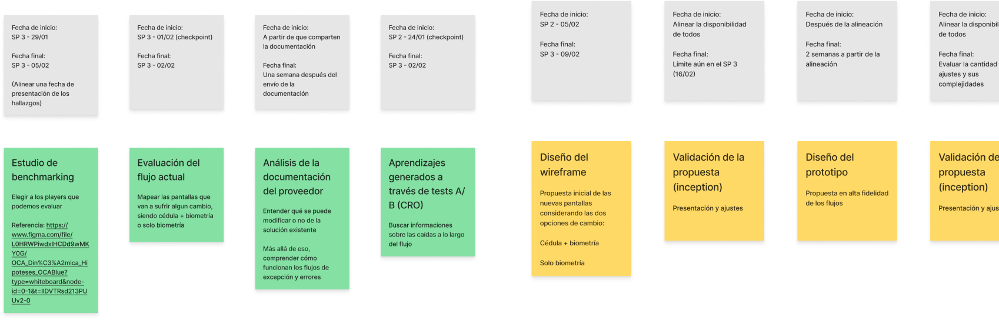
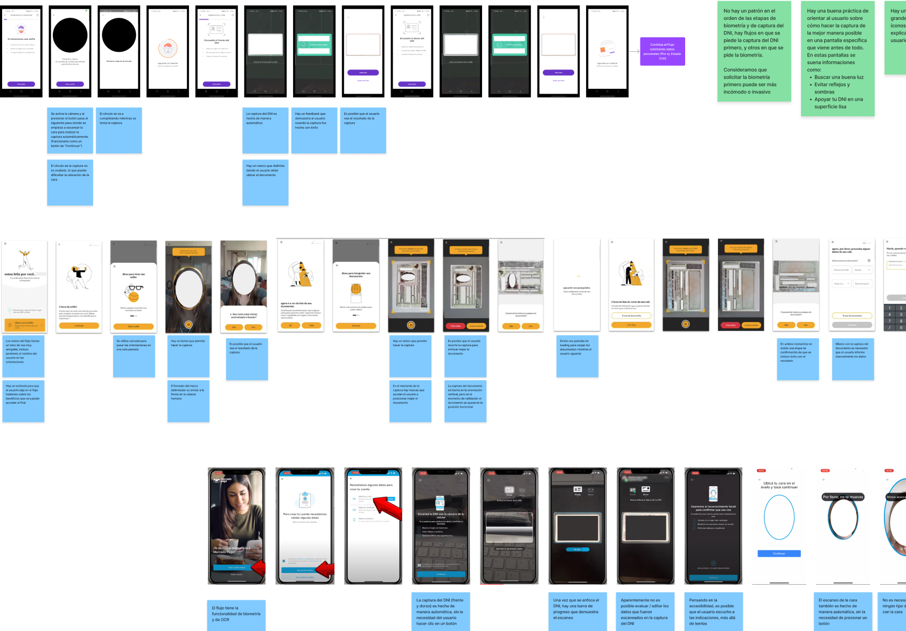
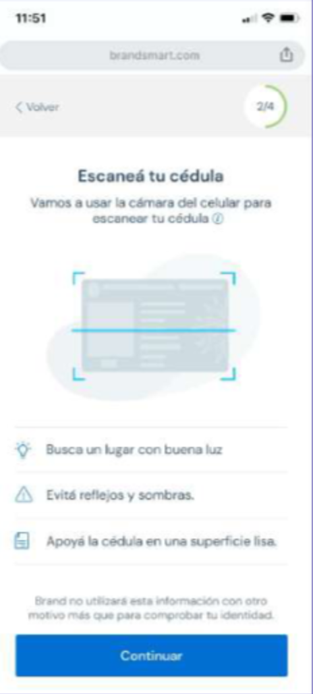
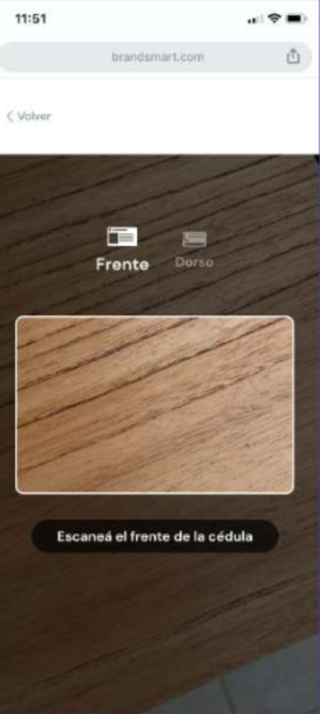
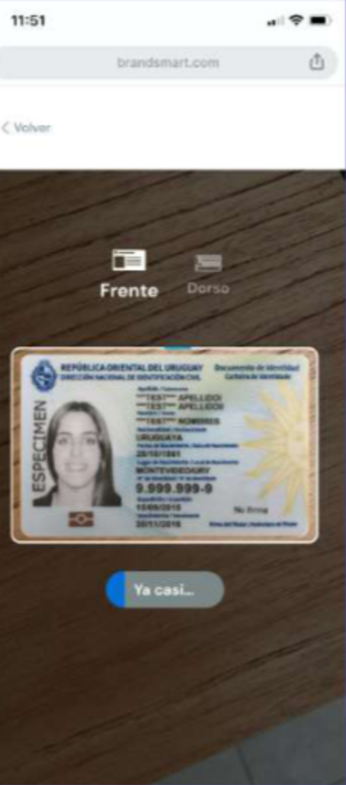
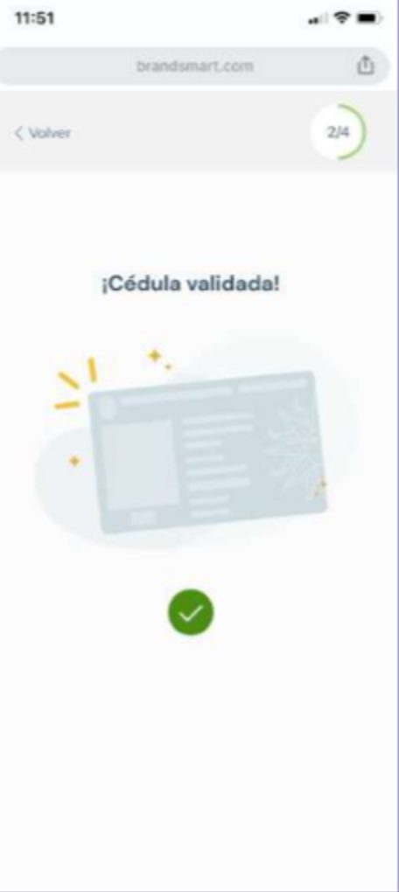
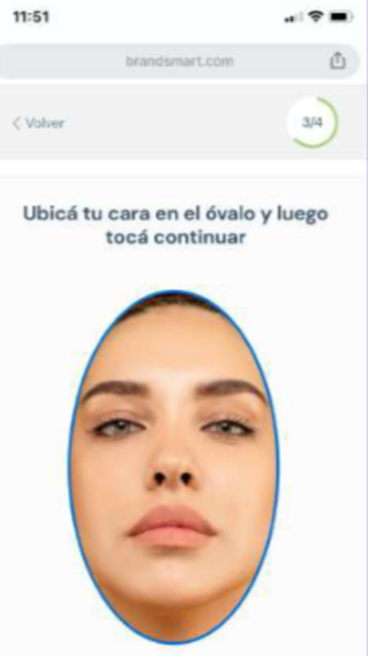
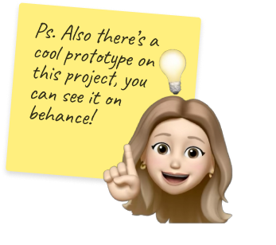

Biometrics inside a bank's onboarding flow.Biometría dentro del flujo de alta de un banco.
A project for a banking entity in Uruguay, whose name we're keeping confidential. With the help of AI, it aimed to detect document forgery and reduce fraud cases.Un proyecto para una entidad bancaria de Uruguay, cuyo nombre mantenemos confidencial. Con la ayuda de IA, buscaba detectar la falsificación de documentos y reducir los casos de fraude.
Among the first biometric flows in the country, for clients mostly over 60.Uno de los primeros flujos biométricos del país, para clientes en su mayoría mayores de 60.
The objective was to include biometric functionalities in the acquisition flow. With the help of AI, it aimed to detect document forgery and reduce fraud cases.El objetivo era incluir funcionalidades biométricas en el flujo de adquisición. Con la ayuda de IA, buscaba detectar la falsificación de documentos y reducir los casos de fraude.
The biggest challenge was that we were among the first to introduce biometrics in the country, with most clients being over 60 years old.El mayor desafío fue que estábamos entre los primeros en introducir biometría en el país, con clientes en su mayoría mayores de 60 años.
So the flow had to be simple, yet convey security.Así que el flujo tenía que ser simple, pero transmitir seguridad.
Eight stages, from parameters to metrics.Ocho etapas, desde los parámetros hasta las métricas.
We ran the project in sprints with the client, checkpointing the findings, the wireframe and the prototype before each hand-off.Trabajamos por sprints con el cliente, con checkpoints de los hallazgos, el wireframe y el prototipo antes de cada hand-off.

We analyzed 6 latam competitors.Analizamos 6 competidores de latam.
We mapped every screen of their identity flows, then read the provider’s documentation end to end and highlighted the sections we could customize.Mapeamos todas las pantallas de sus flujos de identidad, después leímos la documentación del proveedor de punta a punta y marcamos las secciones que podíamos customizar.
There is no shared pattern for the order of the biometrics and ID capture steps. Some flows ask for biometrics first, others ask for the document first.No hay un patrón común en el orden de las etapas de biometría y captura del documento. Algunos flujos piden la biometría primero y otros el documento.
Asking for the document before the selfie felt less invasive, so we put the cédula scan first and the face match after it.Pedir el documento antes de la selfie resultaba menos invasivo, así que pusimos el escaneo de la cédula primero y el match facial después.
Guide the capture on a screen of its own, before the camera opens: find good light, avoid reflections and shadows, rest the ID on a flat surface.Guiar la captura en una pantalla propia, antes de que se abra la cámara: buscar buena luz, evitar reflejos y sombras, y apoyar la cédula en una superficie lisa.

Four steps, each one explained before it starts.Cuatro pasos, cada uno explicado antes de empezar.
A visible 2/4 counter, a short explanation of what biometrics is for and who runs it, and a specific message for every error case rather than one generic rejection at the end.Un contador 2/4 visible, una explicación corta de para qué sirve la biometría y quién la realiza, y un mensaje específico para cada caso de error en lugar de un rechazo genérico al final.
Empezamos con la biometría
What biometrics is for, that the data is matched against the cédula, and that Facetec runs the check. A link to frequently asked questions sits under it.Para qué sirve la biometría, que los datos se cruzan con la cédula y que la realiza Facetec. Debajo, un link a preguntas frecuentes.
Escaneá tu cédula
Front and back capture with the three guidelines on screen: good light, no reflections or shadows, ID on a flat surface.Captura del frente y del dorso con las tres pautas en pantalla: buena luz, sin reflejos ni sombras, cédula sobre una superficie lisa.
Vamos a validar que sos vos
The face match, framed inside an oval, with instructions to stay in a well-lit place, remove glasses and keep a neutral expression.El match facial, encuadrado en un óvalo, con indicaciones de estar en un lugar bien iluminado, no usar anteojos y mantener una expresión seria.
Identidad validada
Validation runs with progress on screen, then a clear outcome. Error cases were designed alongside the happy path.La validación corre con el progreso en pantalla y después muestra un resultado claro. Los casos de error se diseñaron junto con el happy path.
Designed screensPantallas diseñadas






What I ownedDe qué me encargué
73% fewer cases flagged for suspected fraud.73% menos casos marcados por sospecha de fraude.
Four months after implementation, the new flow helped reduce cases flagged for review due to suspected fraud by 73%.Cuatro meses después de la implementación, el nuevo flujo ayudó a reducir un 73% los casos marcados para revisión por sospecha de fraude.
This significantly sped up the acquisition process and increased approval rates compared to pending verifications.Esto aceleró significativamente el proceso de adquisición y aumentó las tasas de aprobación frente a las verificaciones pendientes.
Due to confidentiality, detailed metrics can’t be shown.Por confidencialidad, no se pueden mostrar métricas detalladas.